Previewing Android Applications
In Qt Design Studio, you can preview Android applications live using an Android emulator.
Prerequisites
Install OpenJDK 11
You need to install OpenJDK 11 as described in Getting Started with Qt for Android, to do this:
- On Linux:
- In the command line, run:
sudo apt-get install openjdk-11-jdk
- In the command line, run:
- On macOS:
- Download OpenJDK 11 from Download OpenJDK.
- In the command line, run:
cd ~/Downloads tar xf microsoft-jdk-11.0.13.8.1-macos-x64.tar.gz
- Copy the unzipped folder to a location where macOS searches for Java by default:
sudo cp -Rv jdk-11.0.13+8 /Library/Java/JavaVirtualMachines/
- Check if Java was correctly installed:
java -versionThe Java installation is correct if the command returns something like:
openjdk version "11.0.13" 2021-10-19 LTS OpenJDK Runtime Environment Microsoft-27990 (build 11.0.13+8-LTS) OpenJDK 64-Bit Server VM Microsoft-27990 (build 11.0.13+8-LTS, mixed mode)
- On Windows:
- OpenJDK 11 is automatically installed with Android Studio.
Install Android Studio and SDK Tools
You need to install Android Studio:
- Download Android Studio from Download Android Studio.
- Install Android Studio according to the Android Studio Installation Guide.
Next, you need to install Android SDK command-line tools:
- Run Android Studio and on the welcome page, select More Actions > SDK Manager.
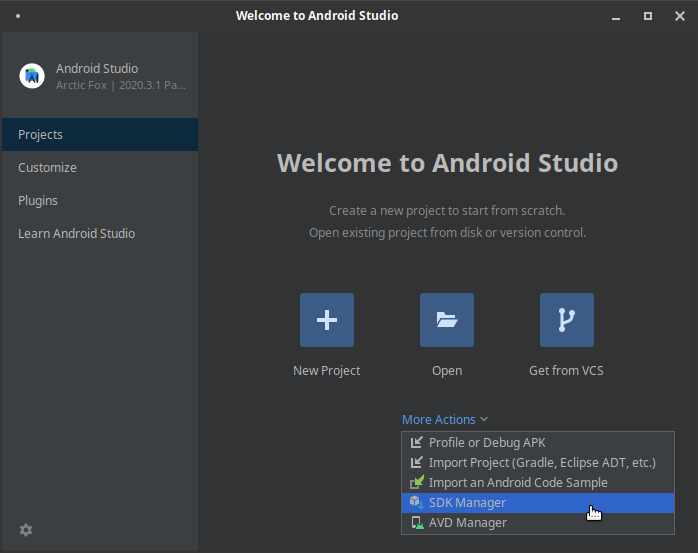
- Select Android SDK Build-Tools 32-rc1, NDK (Side by side), and Android SDK Command-line Tools (latest).
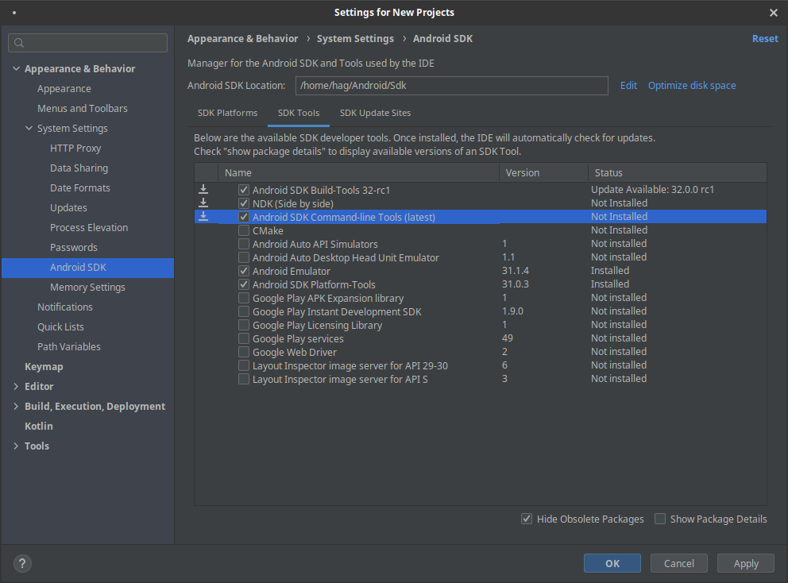
- Select Apply and follow the instructions in the wizard to finalize the installation.
Install Android SDK Packages in Qt Design Studio
You need to install Android SDK packages in Qt Design Studio:
- Run Qt Design Studio.
- Go to Edit > Preferences > Devices.
- Select Yes on the Missing Android SDK Packages dialog.
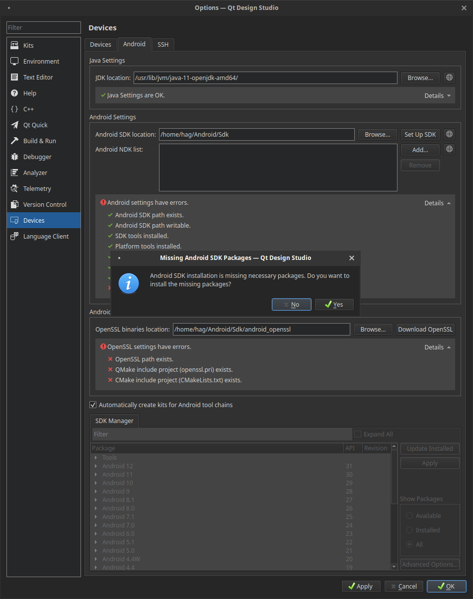
- Select OK on the Android SDK Changes dialog.
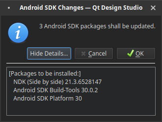
- Select Yes on the Android SDK Licenses dialog.
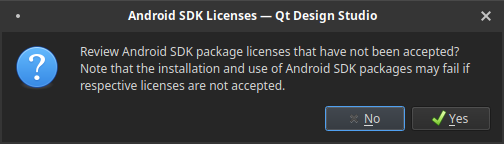
Note: The installation can take a while. If the installation process seems to have stopped working, try to restart Qt Design Studio and run the installation again.
After completing these steps, you should no longer have any errors on the Edit > Preferences > Devices page.
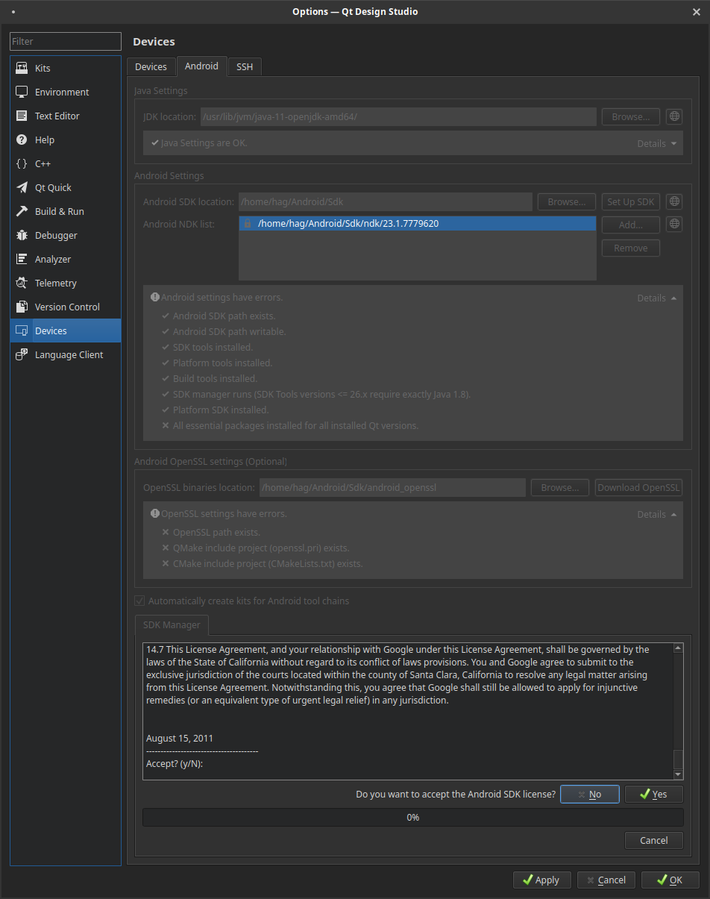
Create Android Virtual Devices
Next, you need to create an Android Virtual Device (AVD):
Note: You might need to download a system image depending on your setup.
- Run Android Studio and on the welcome page, select More Actions > AVD Manager.
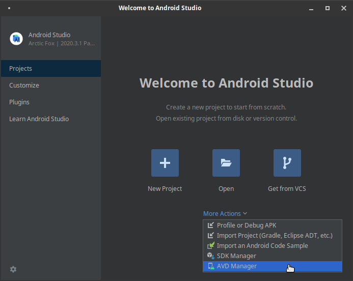
- Select Create Virtual Device and follow the instructions in the wizard to finalize the creation.
Qt Design Studio has a AVD manager where you can create AVDs as well but it is recommended to use Android Studio because then you can directly install the needed system package for the selected device configuration.
To create an AVD in Qt Design Studio:
- Go to Edit > Preferences.
- On the Devices tab, select Add and follow the wizard to finalize the creation. If there is no entry for Android Device in the Available device types list, try restarting Qt Design Studio.
Note: Many device images require Intel HAXM to work on Windows 10 and later, you can download and install the drivers from here.
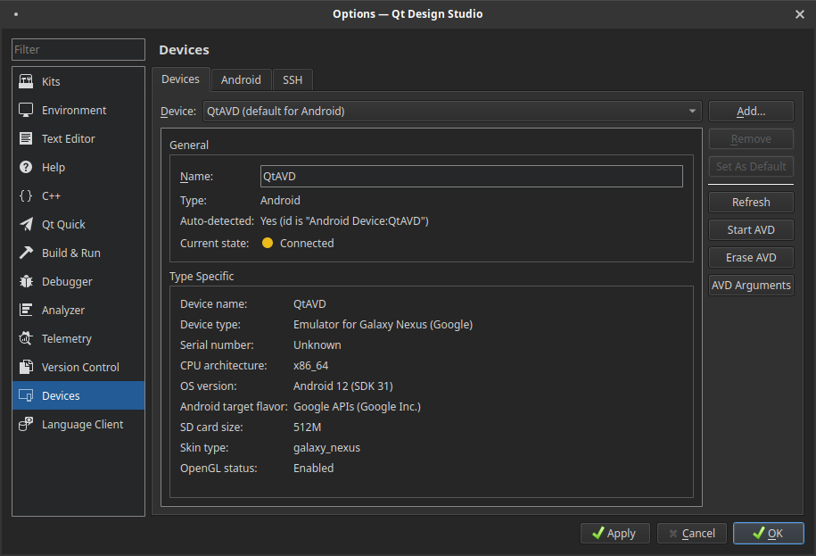
Set the AVD as the Device in the Android Kit
Next, you need to set the AVD as the Android device kit. You do this under the Kits tab. If the Kits list is empty, restart Qt Design Studio.
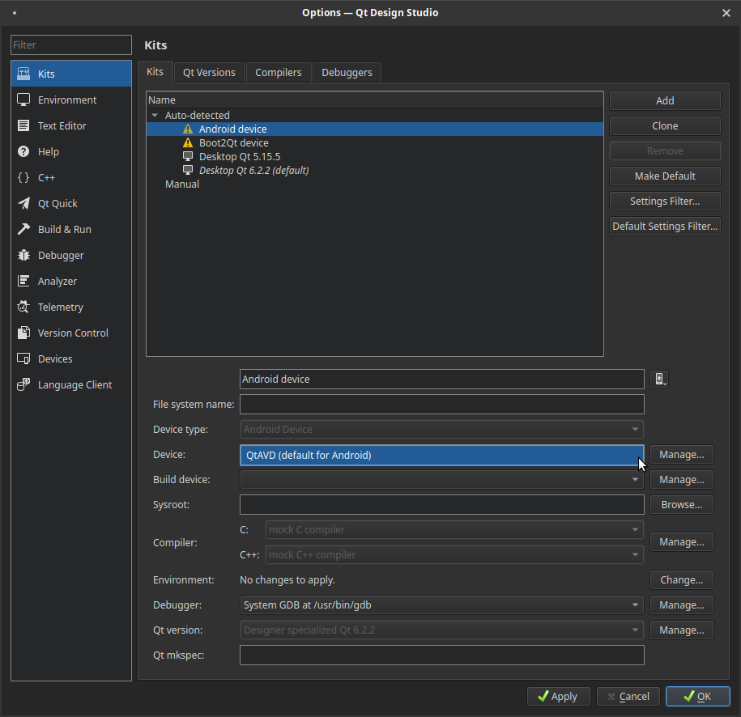
Create a Project and Run the Emulator
Now, you are set up and can create a project in Qt Design Studio. In the project, configure it to run on the Android device:
- Select the Projects mode tab.
- Under Build & Run, select the Android device.
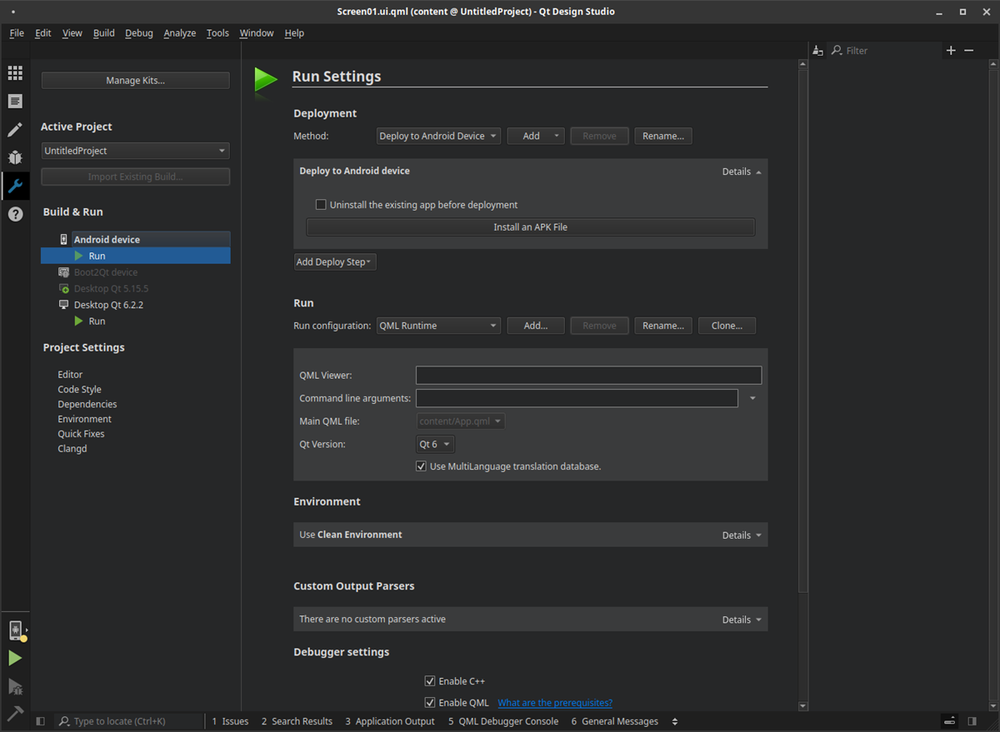
Next, to run the emulator, do one of the following:
- Select Live Preview in the top toolbar.
- Select Build > QML Preview.
Note: The Build menu option is not visible by default. To show it, go to Edit > Preferences > Environment > Qt Design Studio Configuration.
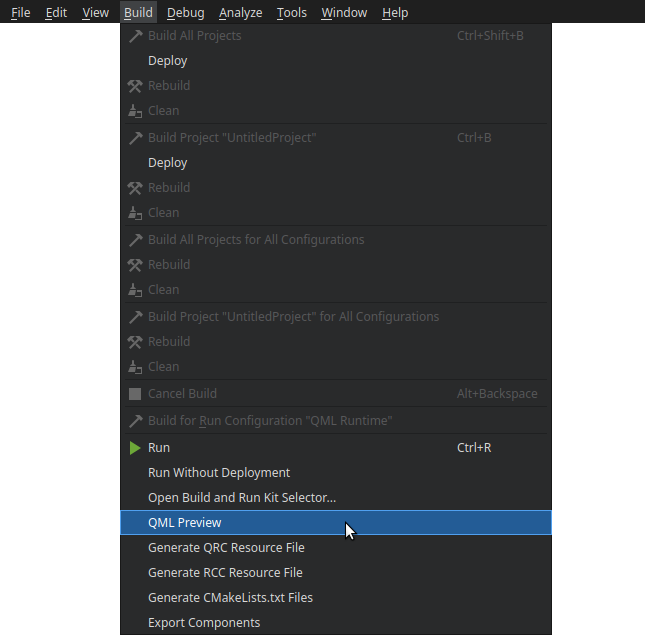
- Select Alt + P.
Now the emulator runs, the qtdesignviewer APK delivered with the Qt Design Studio installation is uploaded, and the project is uploaded and shown in the emulator.
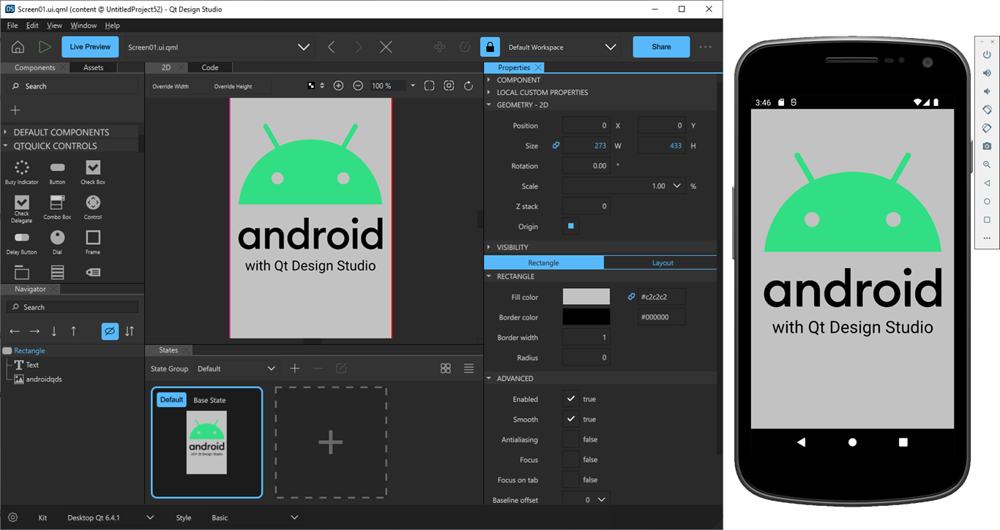
Note the following:
- The qtdesignviewer for Android currently has no live preview. You have to restart the preview to see updates.
- Android typically has very high DPI and it is good to familiarize yourself with how high DPI works in Qt 6. You can, for example, use QT_SCALE_FACTOR or QT_USE_PHYSICAL_DPI. You can define those in the .qmlproject file.
- The qtdesignviewer for Android is currently built with Qt 6.2 and comes with all QML modules shipped with Qt Design Studio 2.3.